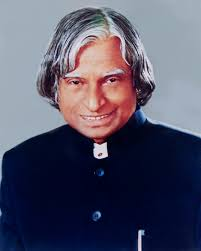

1931 – 2015
Avul Pakir Jainulabdeen Abdul Kalam (15 October 1931 – 27 July 2015) was an Indian aerospace scientist who served as the 11th President of India from 2002 to 2007. He was born and raised in Rameswaram, Tamil Nadu, and studied physics and aerospace engineering. He spent four decades as a scientist and science administrator, mainly at the Defence Research and Development Organisation (DRDO) and the Indian Space Research Organisation (ISRO). He was intimately involved in India's civilian space programme and military missile development efforts. He thus came to be known as the Missile Man of India for his work on ballistic missile and launch vehicle technology. He also played a pivotal role in India's Pokhran-II nuclear tests in 1998 — the first since the original nuclear test by India in 1974.
Dr. Kalam came from a very poor family in Rameswaram. His father rowed a boat and earned very little. But Kalam never used poverty as an excuse. He sold newspapers as a child just to help his family and still studied hard every day.
What I admire most is his simplicity. Even after becoming the President of India, he lived in a small house and owned very few things. He donated most of his salary and his belongings. He never became proud or arrogant.
He had a deep love for students and children. He visited schools, met children, answered their letters personally, and always asked them — "What is your dream?" He believed that the future of India lives in its young people.
"Dream is not what you see in sleep. Dream is the thing which does not let you sleep."
— Dr. APJ Abdul KalamRead more about A. P. J. Abdul Kalam on Wikipedia.